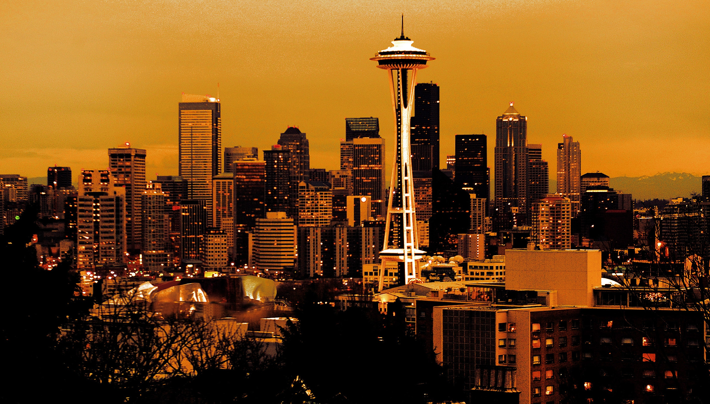
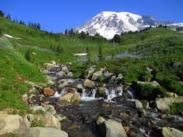

Places that are a must see while visiting the Evergreen State!

Seattle With its The Seattle Center, location of the 1962 World's Fair, has become a premier destination for arts, entertainment and leisure activities. The 74-acre campus is home to The Experience Music Project, The Chihuly Garden and Glass Museum, and The Space Needle.
Downtown Seattle hosts the Seattle Art Museum, The Seattle Symphony, and Pike Place Market.
Historic Pioneer Square is the destination for the Seattle Underground Tour, and is adjacent to CenturyLink Stadium and Safeco Field.
More adventuresome travelers might want to take in some of these points of interest.
And, the Seattle.gov weekend calendar has up-to-date information on events throughout the region. Learn More

Mt. Rainier Ascending to 14,410 feet above sea level,
Mount Rainier stands as an icon in the Washington landscape.
An active volcano, Mount Rainier is the most glaciated peak in the contiguous U.S.A.,
spawning five major rivers. Subalpine wildflower meadows ring the icy volcano while
ancient forest cloaks Mount Rainier’s lower slopes. Wildlife abounds in the park’s ecosystems.
A lifetime of discovery awaits. Learn More
La Push Beaches LA PUSH, Clallam County — Gazing out across First Beach to 160-foot-high A-Ka-Lat,
a small island that has forever been sacred to the Quileute people, I was transfixed by the idea of
what life would have been like on this windswept coast — barely more than a rock’s skip from America’s
northwest corner — in the days before electric lights and heat you could summon with a switch. Learn More
San Juan Islands The San Juan Islands are an archipelago in the northwest corner of the contiguous
United States between the U.S. mainland and Vancouver Island, British Columbia, Canada.
The San Juan Islands are part of the U.S. state of Washington. Today, the San Juan Islands are an
important tourist destination, with sea kayaking and orca whale-watching (by boat or air tours) two
of the primary attractions. Learn More
Olympia Olympia was incorporated as a town on January 28, 1859, and as a City in
1882.[8] The population was 46,479 as of the 2010 census, making it the 24th largest city in
the state. The city borders Lacey to the east and Tumwater to the south. Olympia is a cultural
center of the southern Puget Sound region. Olympia is located 60 miles (100 km) southwest of Seattle,
the largest city in the state of Washington. Learn More